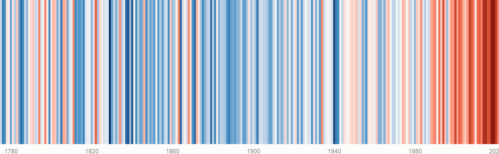

Österreich im Klimawandel
Zwei Blickwinkel auf dieselbe Frage
Alle Auswertungen auf dieser Seite beruhen auf frei zugänglichen Messreihen von GeoSphere Austria. Nichts davon ist modelliert oder hochgerechnet — es sind gemessene Temperaturen. Der Code ist auf jeder Seite sichtbar, einfach auf R-Code anzeigen klicken.
Code
wien <- histalp_holen(152, "T01") |>
rename_with(tolower) |>
mutate(jahr = as.integer(substr(as.character(time), 1, 4))) |>
filter(!is.na(t01), !is.na(jahr))
basis <- mean(wien$t01[between(wien$jahr, 1961, 1990)], na.rm = TRUE)
wien <- wien |> mutate(abw = t01 - basis)
g <- max(abs(wien$abw), na.rm = TRUE)
ggplot(wien, aes(jahr, 1, fill = abw)) +
geom_tile(width = 1, height = 1) +
scale_fill_gradientn(colours = STRIPES, limits = c(-g, g), guide = "none") +
scale_x_continuous(expand = c(0, 0), breaks = seq(1780, 2020, 40)) +
scale_y_continuous(expand = c(0, 0)) +
theme_void(base_family = "sans") +
theme(axis.text.x = element_text(size = 10, color = INK_MUT,
margin = margin(t = 6)),
plot.background = element_rect(fill = SURFACE, color = NA))
Die zwei Seiten
270 Jahre
Die längsten Messreihen Österreichs, aus HISTALP. Warming Stripes für sechs Stationen vom Flachland bis auf 3.100 Meter, die Verschiebung der Temperaturverteilung — und die Frage, ob sich auch der Niederschlag verändert hat. Antwort: nicht erkennbar.
Hitze und Frost
Dieselbe Entwicklung in Tagesdaten statt Jahresmitteln. Hitzetage und Tropennächte, das länger werdende frostfreie Jahr, der Monat mit der stärksten Erwärmung und die Frage, aus welchen Jahren die Tagesrekorde stammen.
Warum zwei Datensätze?
Sie beantworten verschiedene Fragen, und keiner kann beides.
HISTALP ist homogenisiert: Stationsverlegungen, Gerätewechsel und geänderte Messzeiten sind herausgerechnet. Nur deshalb darf man einen Wert von 1780 überhaupt mit einem von 2020 vergleichen. Dieser Datensatz liefert allerdings nur Jahres- und Monatswerte.
klima-v2-1d liefert jeden einzelnen Messtag, reicht dafür weniger weit zurück und ist nicht homogenisiert. Für Schwellenwerte wie „30 Grad” braucht man aber genau das: den einzelnen Tag.
Die lange Reihe zeigt also dass es wärmer wird, die Tagesreihe zeigt, was das im Alltag bedeutet.